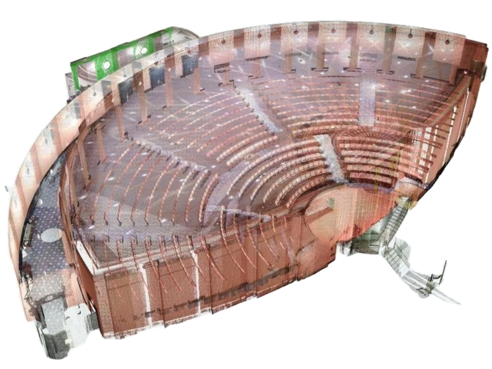
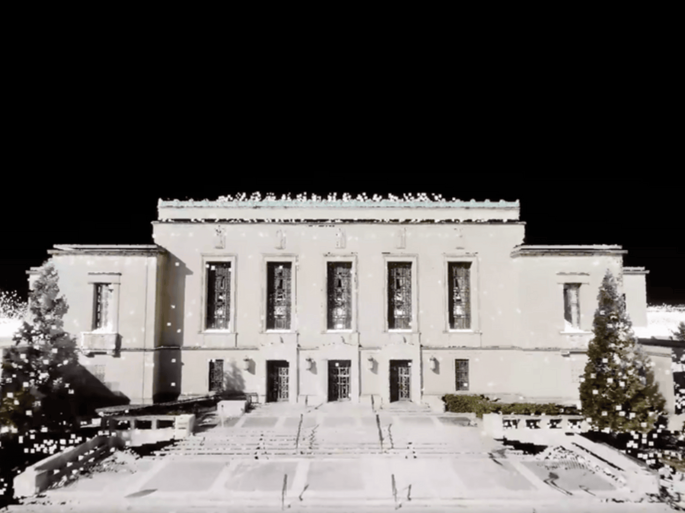

The James and Ann Duderstadt Center, located at the heart of the University of Michigan’s North Campus, serves as a dynamic, multidisciplinary hub for innovation and creative exploration. Known for its integration of engineering, arts, and architecture, the building is a cornerstone of cross-disciplinary collaboration and a vital resource for students and faculty alike.
With generous support from the Duderstadt Center’s Facilities Tean, EIPC was granted access to conduct a detailed lidar scan of this vibrant and heavily used academic space.
The model reveals the underlying spatial logic and infrastructural choreography that support the building’s hybrid functionality. It challenges viewers to rethink the value of back-of-house systems in highly programmed, multifunctional buildings.
The resulting 3D model stands as both an archive of a continually evolving space and a pedagogical tool, allowing students to engage with advanced scanning technologies while examining the complex interplay of form, flow, and function that defines the Duderstadt Center.